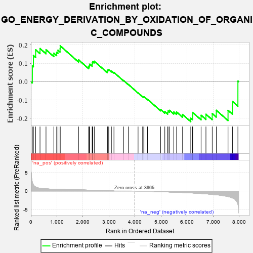
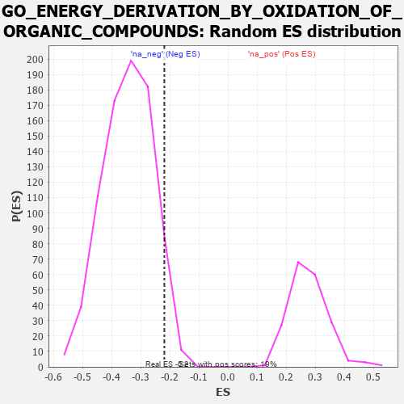

| | | Dataset | 7d |
| Phenotype | NoPhenotypeAvailable |
| Upregulated in class | na_neg |
| GeneSet | GO_ENERGY_DERIVATION_BY_OXIDATION_OF_ORGANIC_COMPOUNDS |
| Enrichment Score (ES) | -0.21864201 |
| Normalized Enrichment Score (NES) | -0.63618356 |
| Nominal p-value | 0.94547707 |
| FDR q-value | 0.9990582 |
| FWER p-Value | 1.0 |
Table: GSEA Results Summary

Fig 1: Enrichment plot: GO_ENERGY_DERIVATION_BY_OXIDATION_OF_ORGANIC_COMPOUNDS
Profile of the Running ES Score & Positions of GeneSet Members on the Rank Ordered List
| PROBE | GENE SYMBOL | GENE_TITLE | RANK IN GENE LIST | RANK METRIC SCORE | RUNNING ES | CORE ENRICHMENT | | 1 | MC4R | | | 57 | 2.491 | 0.0860 | No |
| 2 | IRS1 | | | 98 | 1.659 | 0.1431 | No |
| 3 | PYGB | | | 183 | 1.114 | 0.1742 | No |
| 4 | GSK3A | | | 351 | 0.745 | 0.1809 | No |
| 5 | CCNB1 | | | 581 | 0.601 | 0.1745 | No |
| 6 | PYGL | | | 882 | 0.510 | 0.1557 | No |
| 7 | COX10 | | | 990 | 0.485 | 0.1604 | No |
| 8 | AKT1 | | | 1040 | 0.476 | 0.1720 | No |
| 9 | G6PC | | | 1121 | 0.459 | 0.1791 | No |
| 10 | COA6 | | | 1126 | 0.459 | 0.1958 | No |
| 11 | NOA1 | | | 1832 | 0.332 | 0.1192 | No |
| 12 | TRAP1 | | | 2219 | 0.274 | 0.0807 | No |
| 13 | COX15 | | | 2238 | 0.270 | 0.0886 | No |
| 14 | GNMT | | | 2261 | 0.266 | 0.0958 | No |
| 15 | OXA1L | | | 2355 | 0.252 | 0.0935 | No |
| 16 | COX7C | | | 2356 | 0.252 | 0.1029 | No |
| 17 | FAHD1 | | | 2375 | 0.249 | 0.1100 | No |
| 18 | LYRM7 | | | 2434 | 0.239 | 0.1116 | No |
| 19 | TAZ | | | 2933 | 0.161 | 0.0548 | No |
| 20 | ETFB | | | 2934 | 0.160 | 0.0608 | No |
| 21 | IDH3A | | | 2956 | 0.157 | 0.0640 | No |
| 22 | ISCU | | | 2989 | 0.151 | 0.0656 | No |
| 23 | TIGAR | | | 3091 | 0.138 | 0.0580 | No |
| 24 | ETFA | | | 3189 | 0.123 | 0.0504 | No |
| 25 | SURF1 | | | 3558 | 0.066 | 0.0064 | No |
| 26 | COX5A | | | 3738 | 0.036 | -0.0149 | No |
| 27 | MTOR | | | 4114 | -0.025 | -0.0613 | No |
| 28 | SDHB | | | 4289 | -0.058 | -0.0811 | No |
| 29 | SDHA | | | 4334 | -0.066 | -0.0842 | No |
| 30 | PHKG1 | | | 4341 | -0.067 | -0.0824 | No |
| 31 | GFPT2 | | | 4475 | -0.089 | -0.0959 | No |
| 32 | COX5B | | | 4980 | -0.194 | -0.1522 | No |
| 33 | FLCN | | | 5140 | -0.235 | -0.1635 | No |
| 34 | IDE | | | 5252 | -0.258 | -0.1679 | No |
| 35 | CDK1 | | | 5264 | -0.262 | -0.1595 | No |
| 36 | OGDHL | | | 5322 | -0.277 | -0.1563 | No |
| 37 | ACTN3 | | | 5486 | -0.315 | -0.1651 | No |
| 38 | PGM1 | | | 5593 | -0.342 | -0.1657 | No |
| 39 | IDH3B | | | 5822 | -0.412 | -0.1790 | No |
| 40 | PGM2 | | | 6137 | -0.515 | -0.1993 | Yes |
| 41 | INSR | | | 6204 | -0.538 | -0.1875 | Yes |
| 42 | GYG1 | | | 6210 | -0.539 | -0.1680 | Yes |
| 43 | DYRK2 | | | 6533 | -0.677 | -0.1833 | Yes |
| 44 | GSK3B | | | 6719 | -0.768 | -0.1779 | Yes |
| 45 | MDH1B | | | 6960 | -0.912 | -0.1740 | Yes |
| 46 | PYGM | | | 7117 | -1.006 | -0.1561 | Yes |
| 47 | CALM1 | | | 7567 | -1.499 | -0.1566 | Yes |
| 48 | PANK2 | | | 7736 | -1.866 | -0.1080 | Yes |
| 49 | PASK | | | 7946 | -3.674 | 0.0032 | Yes |
Table: GSEA details [plain text format]

Fig 2: GO_ENERGY_DERIVATION_BY_OXIDATION_OF_ORGANIC_COMPOUNDS: Random ES distribution
Gene set null distribution of ES for GO_ENERGY_DERIVATION_BY_OXIDATION_OF_ORGANIC_COMPOUNDS